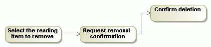

Changing the activity diagram orientation
- From the diagram pane shortcut menu, select Diagram Properties, or press Shift + Enter to open the Diagram Properties dialog.
- Change the value for the Diagram Orientation property in the Diagram Properties dialog.
